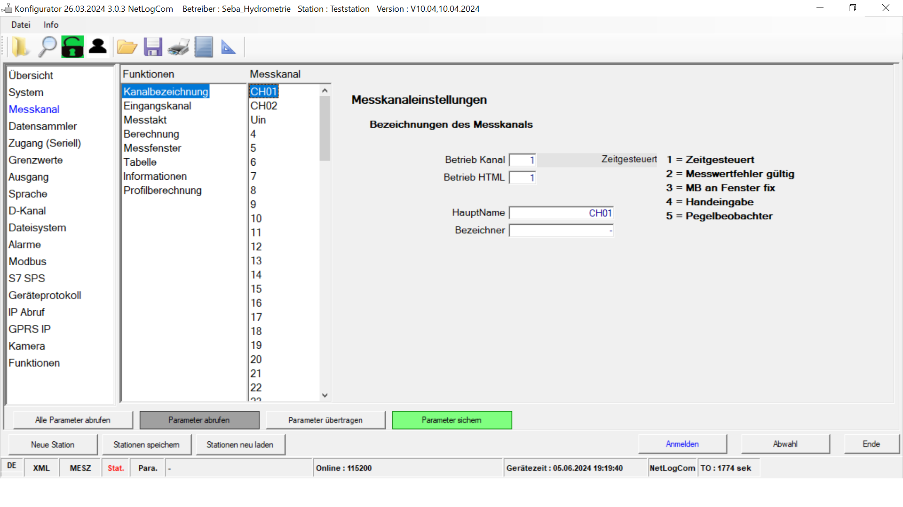
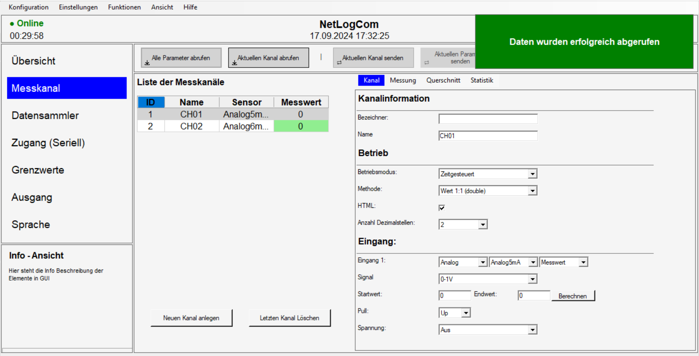
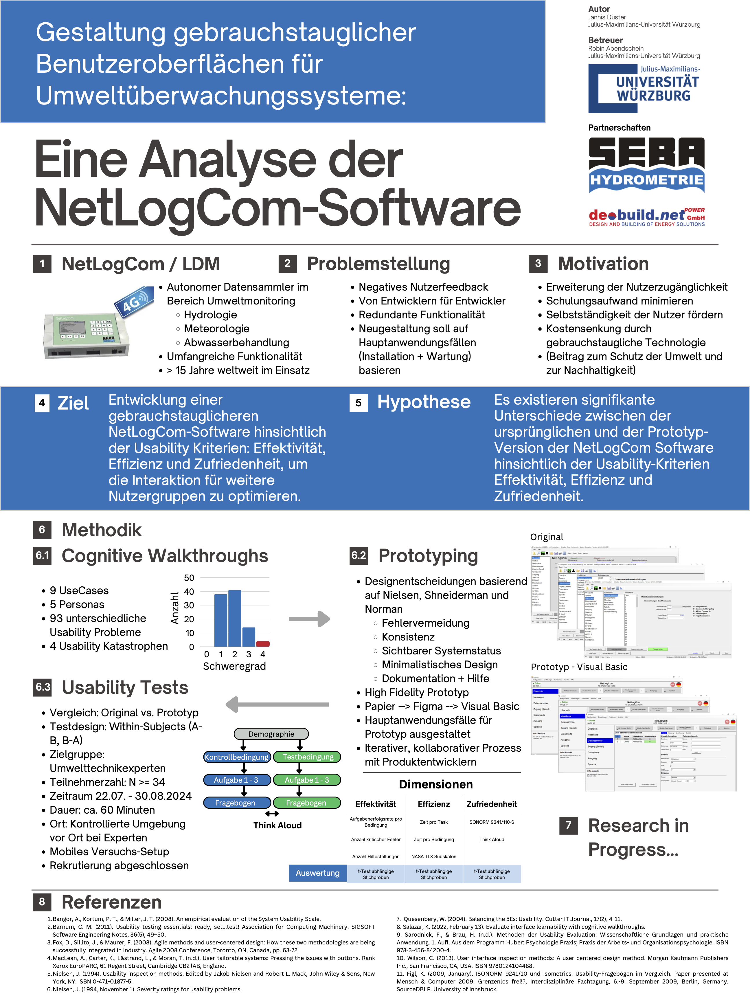

NetLogCom: Enhancing usability in environmental monitoring
In collaboration with SEBA Hydrometrie GmbH & Co. KG and de-build.net POWER GmbH, I analyzed and redesigned the NetLogCom software interface to make it easier to use—especially for less experienced users. I created a high-fidelity prototype and validated it through usability testing with 35 domain experts. The prototype performed significantly better than the original in effectiveness, efficiency, and satisfaction.
Summary
Responsibilities
- Usability analysis (cognitive walkthroughs)
- Study planning and task design
- Participant recruiting (expert users)
- Moderation (think-aloud), on-site logistics
- Quantitative + qualitative analysis
- Severity ratings and prioritization
- Stakeholder readout (leadership + developers)
- High-fidelity prototyping
- Design iteration with developers
- Implementation in Visual Basic (prototype)
- User-centered design + heuristic principles
- Documentation (protocols, checklists, artifacts)
Background
Environmental monitoring systems are often used under time pressure and in critical situations. NetLogCom collects hydrological and environmental data (e.g., water level and flow rate) and is used in areas like hydrology, meteorology, and wastewater management. The hardware was strong, but the software interface was difficult to use—especially outside of a small group of technical experts.
Constraints & context
- Configuration tool with many parameters and dependencies
- Real hardware setup (RS232 + sensors) used in the study
- Stakeholders included leadership and the core dev team
Analysis
Identifying barriers with cognitive walkthroughs
I started with cognitive walkthroughs to get a clear picture of where the interface breaks down. I modeled the process with five personas (from novice to expert) and walked through nine task sequences. Across 59 steps, I documented usability breakdowns and turned them into a structured issue list.
Common issue themes
- Error reduction: risky actions without guardrails or confirmation
- Help & support: missing guidance for unfamiliar terms and steps
- System status: weak visibility of online/offline state and device context
- Consistency: uneven terminology and interaction patterns
- Controls: confusing buttons/dropdowns and unclear affordances
- Minimalism: too many options shown at once (no progressive disclosure)
I used the walkthrough results as a roadmap: fix high-severity issues first, then simplify navigation and reduce visible complexity.
Prototyping
From concept to a working prototype
Based on the scope of issues, I decided to prototype a new version rather than patch the existing UI. I started in Figma to iterate quickly with developers, then implemented the high-fidelity prototype in Visual Basic to stay close to the original environment and make integration discussions realistic.
Key changes I introduced
- Menu bar: clearer structure (less frequently used items grouped consistently)
- Status panel: online/offline, timer, device name, date/time, profile + language
- Primary actions: larger, clearer buttons (retrieve/send/save), plus undo + confirmations
- Navigation: reduced to essential areas to prevent overwhelm
- Channel list: focus on active channels, clearer status indicators
- Settings layout: grouped fields, guided dropdowns, fewer “mystery” inputs
- Info panel: contextual help/tooltips to support less experienced users
- Terminology: renamed labels to match the mental model of operators
UI evolution


Usability tests
How I validated the redesign
I ran moderated usability tests to compare the original and the prototype in a realistic setup. Participants were 35 domain experts recruited from SEBA/de-build’s customer base. Sessions were conducted on-site with real hardware and sensors.
What I measured
- Effectiveness: task success, critical errors, need for assistance
- Efficiency: time per task and time per condition
- Workload: NASA-TLX
- Satisfaction: ISONORM 9241/110-S
- Think-aloud: decision points and confusion moments
- Observation: where users hesitate, backtrack, or miss information
- Post-test interview: what felt better/worse and why
Notes: Sessions were recorded (screen + audio) and I took handwritten notes during testing. I synthesized qualitative feedback using affinity mapping and prioritized issues via severity ratings.
Results
Qualitative feedback (what people noticed)
Impact
- The results gave SEBA/de-build leadership a concrete basis to evaluate next steps.
- The dev team used my findings and priorities as input for a full interface redesign.
- Practical outcome: fewer mistakes during configuration and a UI that is easier to learn.
Artifacts
I only share sanitized artifacts. These are here to show how I work and how I document decisions.


What I’d do again / differently
- Do again: field testing with real hardware. It kept the feedback grounded in real constraints.
- Do again: the A/B comparison. It made discussions with leadership and devs much easier.
- Do differently: after rollout, run a short follow-up to measure learnability over time in the field.